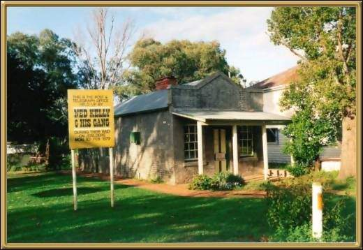

Photographer: Jean Stokes
In 1879 Ned Kelly and his gang captured the police station here and cut the wires to the Post and Telegraph Office, pictured above. Jerilderie is a pretty town, and also happens to have one of the largest windmills in the Southern Hemisphere.